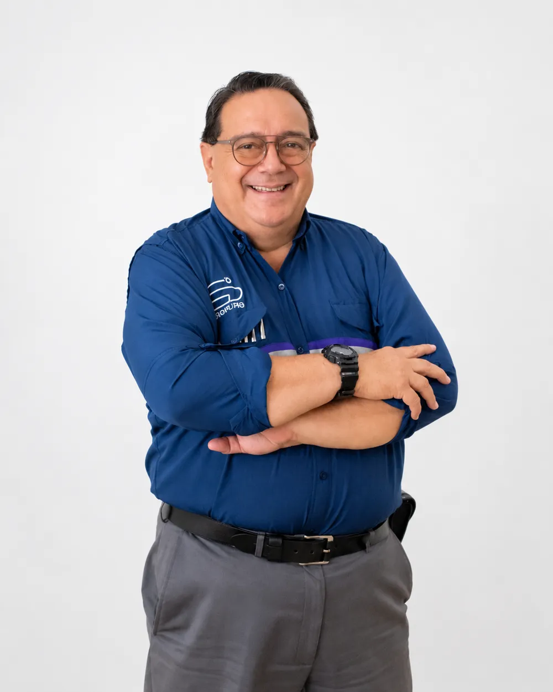
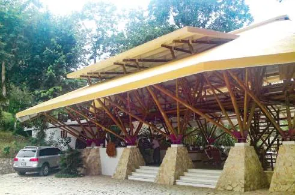
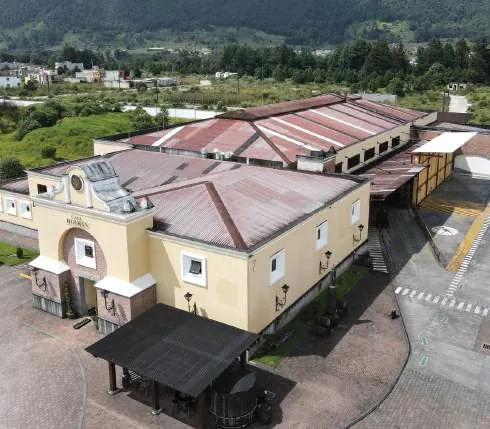
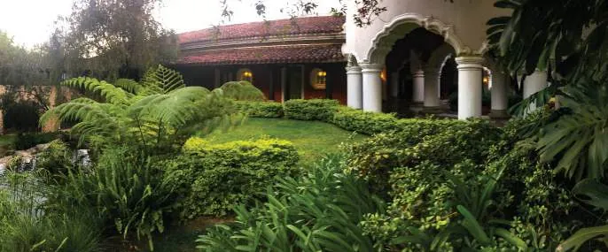
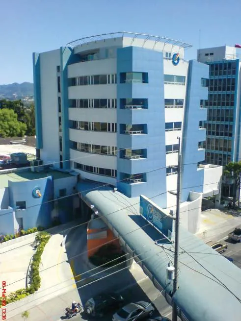
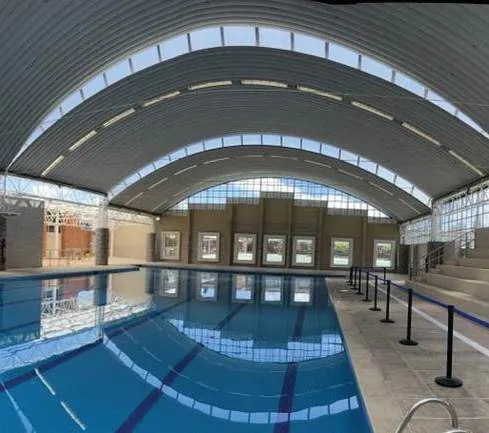
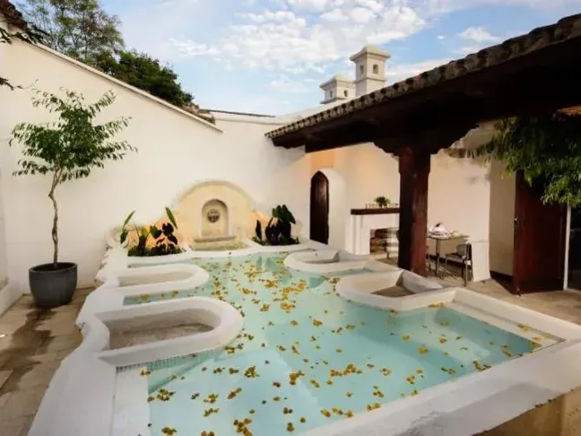
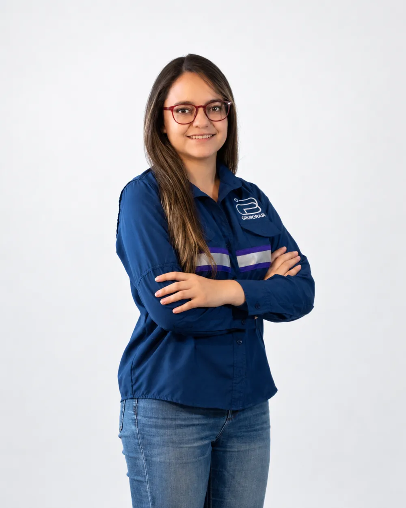

Nosotros Fundador
Arquitecto · Colegiado No. 401
Arq. Daniel Borja Rosales
Cuatro décadas entre el aula y la obra. Formó a más de 1,500 arquitectos y diseñadores en la Universidad Rafael Landívar y ha diseñado, coordinado y supervisado proyectos hoteleros, hospitalarios, industriales y comerciales en Guatemala y Centroamérica.
- Práctica profesional
- 1983
- Arquitectos y diseñadores formados
- +1,500
- Años de trayectoria universitaria
- +20

Tres fechas que ordenan la historia
-
1983
Su propia oficina
Abre el taller «Arquitecto Daniel Borja y colaboradores» e inicia su práctica independiente.
-
1991
Nace la metodología
En unidad profesional con el Ing. Jaime Cáceres Knox diseña la metodología de servicios que la oficina aplica hasta hoy.
-
2019
Nace Grupo Borja
Se integra la Ing. Lucía Borja y comienza la modernización de la firma.
Formación
Periodo1962 – 1998-
1962 – 1974
Colegio La Preparatoria
Primaria, básico y diversificado en la Ciudad de Guatemala. Se gradúa de Bachiller en Ciencias y Letras.
-
1972 – 1974
Alumno abanderado
Distinción del Colegio La Preparatoria durante sus últimos tres años.
-
1976 – 1982
Licenciatura en Arquitectura
Facultad de Arquitectura de la Universidad Rafael Landívar. Tesis cum laude.
-
1978
Secretario estudiantil del simposio sobre el terremoto
Participó como secretario estudiantil en el simposio sobre el terremoto de 1976, realizado en cooperación con Japón.
-
1982
Premio a la Mejor Tesis del Año
Otorgado por el Colegio de Arquitectos de Guatemala.
-
1982 – 1998
Postgrado en Dirección y Administración Universitaria
Formación con el Dr. Alfonso Borrero Cabal, S.J., en las universidades jesuitas de Bogotá, República Dominicana y Costa Rica, que acompañó su carrera directiva en la URL.
El académico
Periodo1980 – 2000Considera a la Facultad de Arquitectura su mejor obra.
Carrera directiva · Facultad de Arquitectura URL
- 1983 – 1987 Secretario
- 1987 – 1990 Vicedecano
- 1990 – 1998 Decano
1987 – 1992
Fundador del Diseño Industrial en Guatemala
Fundó el Departamento de Diseño Industrial de la Universidad Rafael Landívar y fue su primer director. Abrió en el país una disciplina que hasta entonces no tenía formación universitaria propia.
Cátedras en Arquitectura · 1980 – 2000
- Matemática
- Física
- Criterio estructural
- Estática
- Resistencia de materiales
- Mecanismos
- Análisis y diseño estructural
- Composición arquitectónica
- Diseño industrial
- Métodos de investigación
Cátedras en Humanidades · 1982 – 1985
- Identidad cultural
- Folklore y costumbres guatemaltecas
-
1982 – 1984
Fundador y primer secretario de la Asociación de Egresados de la URL.
-
Decanatura URL
Coordinador de la URL con instituciones como INGUAT, MINEDUC, el Ministerio de Salud y AGEXPORT, en diversos proyectos de desarrollo, como Nexo, impulsados bajo la dirección de la Decanatura.
La práctica
Periodo1983 – 1991Mientras enseñaba estática y resistencia de materiales, abrió su taller y llevó ese rigor estructural a cada proyecto. De ahí viene la forma de trabajar que distingue a la firma: arquitectura pensada con criterio de ingeniería.
-
1983
Taller de Arquitectura y Proyectos
Funda la oficina «Arquitecto Daniel Borja y colaboradores»: proyectación arquitectónica, sistemas estructurales y constructivos, coordinación de proyectos y consultoría.
-
1990
Premio Lámina de Oro
Asociación Latinoamericana del Fibrocemento, al mejor proyecto desarrollado con láminas de fibrocemento.
-
1991
Premio Nacional Opus de Arquitectura
Rama de Conservación del Patrimonio Cultural y Natural, por el Hotel Villa Maya en Petén.
-
1991
Unidad profesional y metodología de servicios
Junto al Ing. Jaime Cáceres Knox forma una unidad de desarrollo y consultoría. De ahí nace la metodología que la oficina sigue hasta hoy:
- Separación de cada diseño por especialidad
- Cotización de cada diseño con tres proveedores
- Selección de las mejores empresas y profesionales
- Cotización de la construcción con la planimetría
- Dirección y supervisión de obra
- Control de la metodología en cada etapa

Obra y clientes
Periodo1991 – hoyPlanificación, coordinación y supervisión de proyectos de vivienda, comercio, industria, hotelería y salud en Guatemala y Centroamérica.
Han confiado en su trabajo
- Villas de Guatemala
- Hospital Centro Médico
- UNOP
- Licores de Guatemala
- Casa Botrán
- Agroindustrias HAME
- Inmobiliaria El Globo
- Grupo Los Tres
- Hilton Guatemala City
- Supermercados SUMA
- Colegio Liceo Javier
- Hoteles G6
- Grupo Portalis
- Grupo Cadar
- Prodinsa
- CENDIS
Obra por sector
-

Comercial e Industria
13 obrasVer sectorCentros comerciales, supermercados, naves industriales, oficinas corporativas y showrooms automotrices.
- Casa Botrán
- Casa de las Nubes · Ron Zacapa
- Centro Comercial Las Puertas
- Edificio HAME
-

Hotelería
5 obrasVer sectorHoteles urbanos y de destino, desde grandes complejos hasta hoteles ecológicos.
-

Hospitalario
3 obrasVer sectorHospitales y unidades especializadas con requerimientos técnicos exigentes.
- Hospital Centro Médico
- UNOP · Hospital de Niños con Cáncer
- Hospital Yarden
-

Academia
2 obrasVer sectorColegios y espacios deportivos para la formación de nuevas generaciones.
-

Residencial
Vivienda y apartamentosVer portafolioViviendas personales diseñadas con cada cliente, edificios de apartamentos y condominios.
- Edificio de apartamentos Jaime Briz
- Residencia Martel González
- Residencias particulares
¿Tienes un proyecto propio? Te acompañamos con el mismo criterio técnico que aplicamos en cada obra, desde la primera idea hasta la supervisión.
Menciones honoríficas, Concurso de Obras de Cementos Progreso · 2000 y 2002.
Servicio institucional
Periodo1984 – 2015Colegio de Arquitectos de Guatemala
-
1984
Vocal I de Junta Directiva.
-
2009 – 2011
Vicepresidente del Tribunal de Honor.
Tribunal Supremo Electoral
-
1986 – 1998
Asesor y consultor en diversos proyectos, en representación de la Universidad Rafael Landívar.
-
1999
Vocal de la Junta Electoral del Departamento de Guatemala y coordinador de infraestructura y montajes del Centro de Información.
-
2011 · 2015
Coordinador General del Centro de Información, Elecciones Generales.
El legado continúa
Desde2019En 2019 nace Grupo Borja. La Ing. Lucía Borja se integra a la firma y la experiencia de cuatro décadas se une con la ingeniería y las nuevas herramientas de gestión.
El criterio con que el Arq. Borja enseñaba estructuras y dirigía obras es hoy el estándar del equipo: arquitectura con precisión técnica y entregas que cumplen lo prometido.
-
Arq. Daniel Borja
Fundador · Visión arquitectónica
LinkedIn ↗ -

Ing. Lucía Borja
Gerencia · Excelencia en ingeniería
LinkedIn ↗